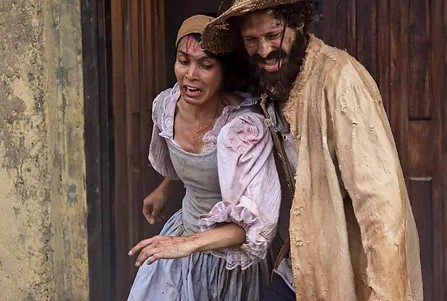

Actuaciones en la Pantalla
Cine
Largometraje
- “GASPAR MENDOZA” (Sin Fecha de Estreno) – Director: Julian Balam. Casa Productora: Villa del Cine.

Cortometrajes
- “YO ACTOR” (Agosto 2014) Actor - Corto de Cine Independiente actualmente participando en el 4to Festival De Cine Venezolano de la Diversidad, Caracas 2014.
- “TORNASOL” (Octubre 2009) Realizador - Corto de Cine Independiente para el Festival Del Cine Venezolano Mérida 2009.
- “NIGHTMARE” (Agosto 2009) Asistente de Dirección - Corto de Cine Independiente.
- “LA FACTORY” (Agosto 2008) Actor - Corto de Cine Independiente. Personaje: Protagónico.
- “CORRESPONSAL” (Mayo 2007) Actor - Corto de Cine para estudiantes de la Universidad Cecilio Acosta. Personaje: Protagónico.
Telenovelas
- “El Arbol de Gabriel” de Alberto Barrera (2011-2012) – Televisora: VENEVISION.
-
"Mi Ex Me Tiene Ganas” de Martin Hahn (2012) – Televisora: VENEVISION
- “Los Secretos de Lucía” de Jörg Hiller (2013) – Televisora: VENEVISION - UNIVISION
- “Los Secretos de Lucía” de Jörg Hiller (2013) – Televisora: VENEVISION - UNIVISION